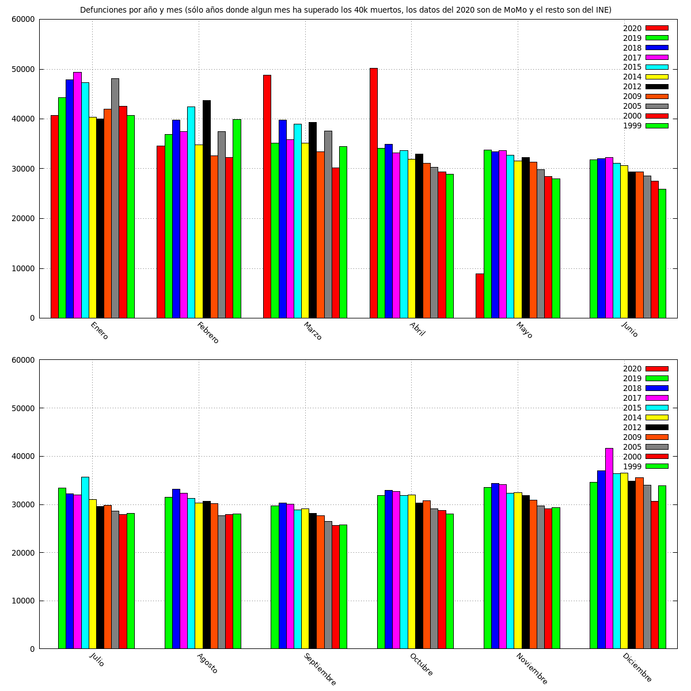
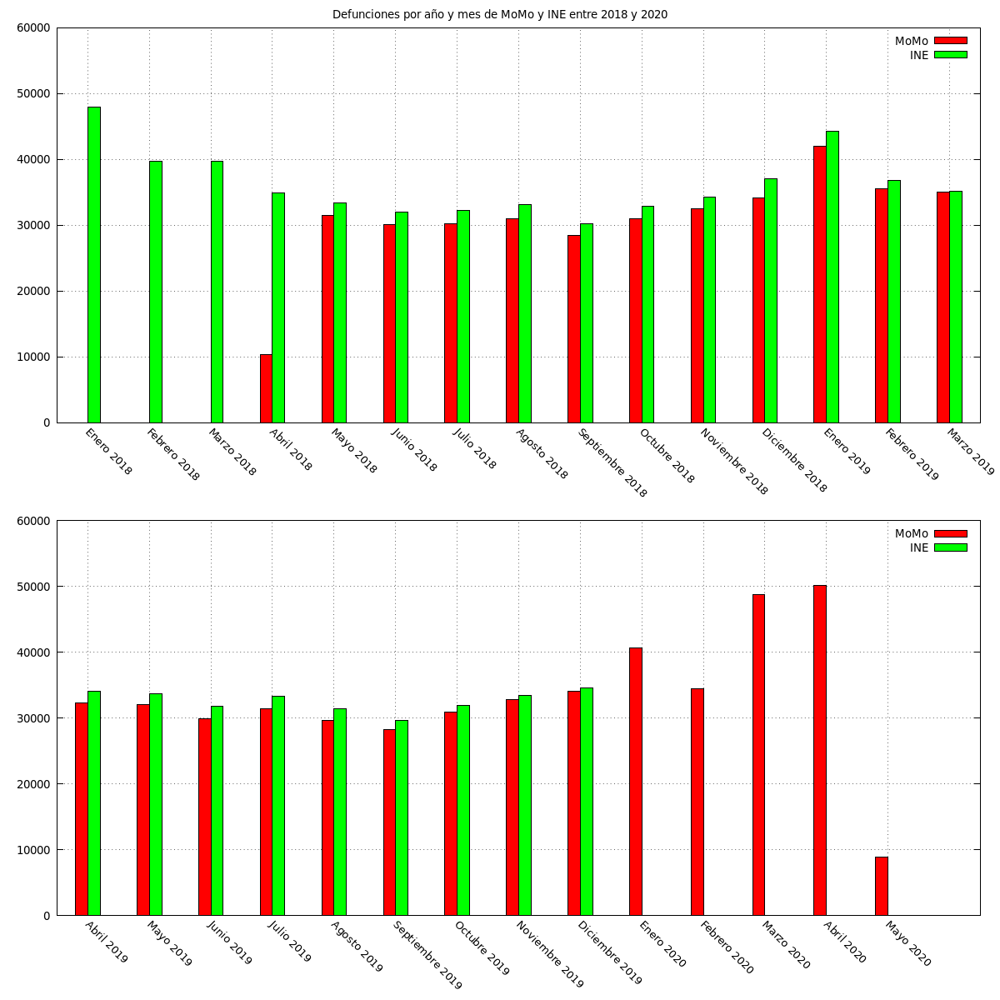
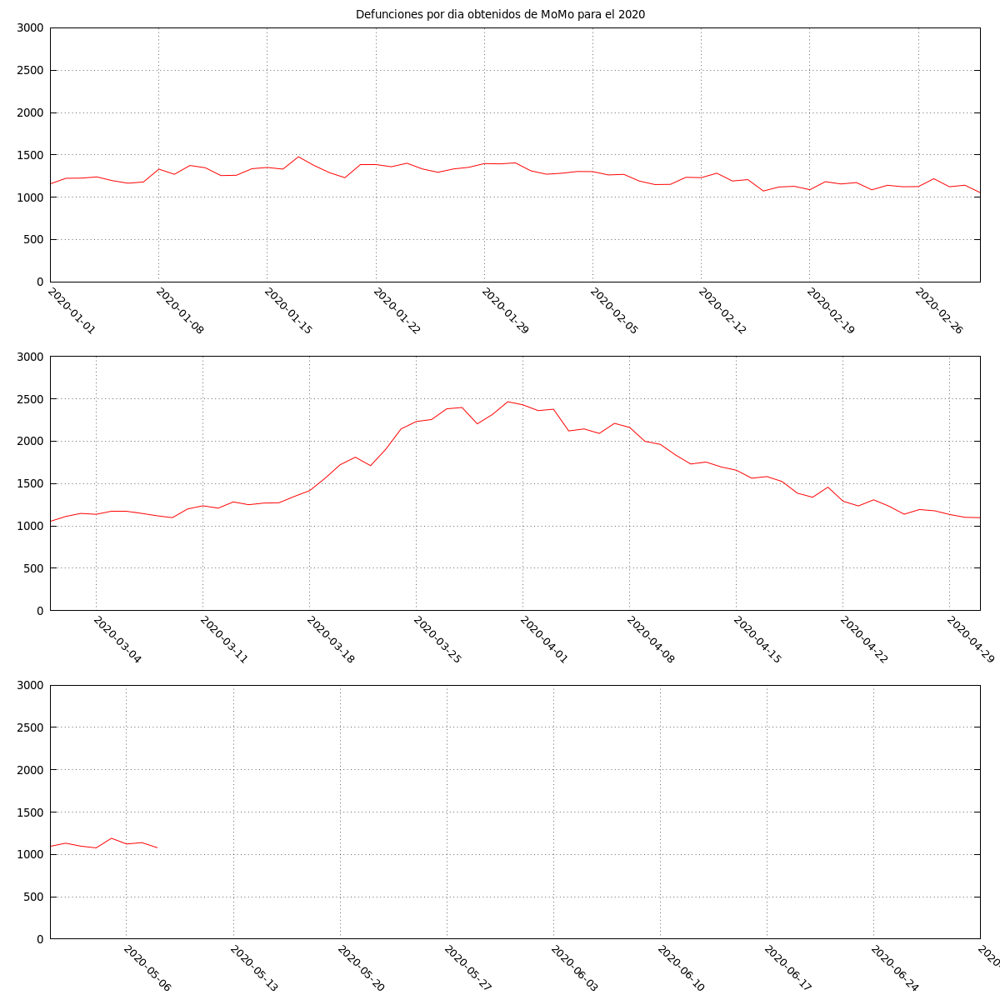
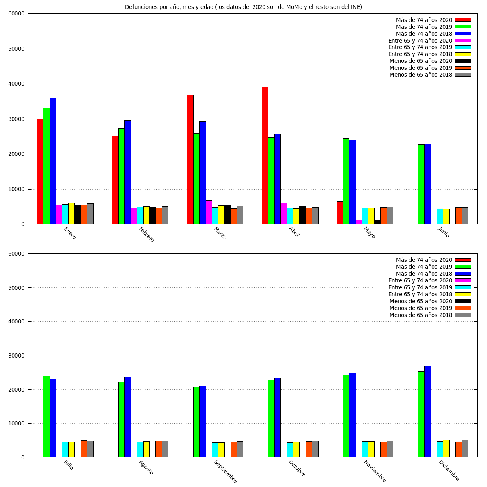
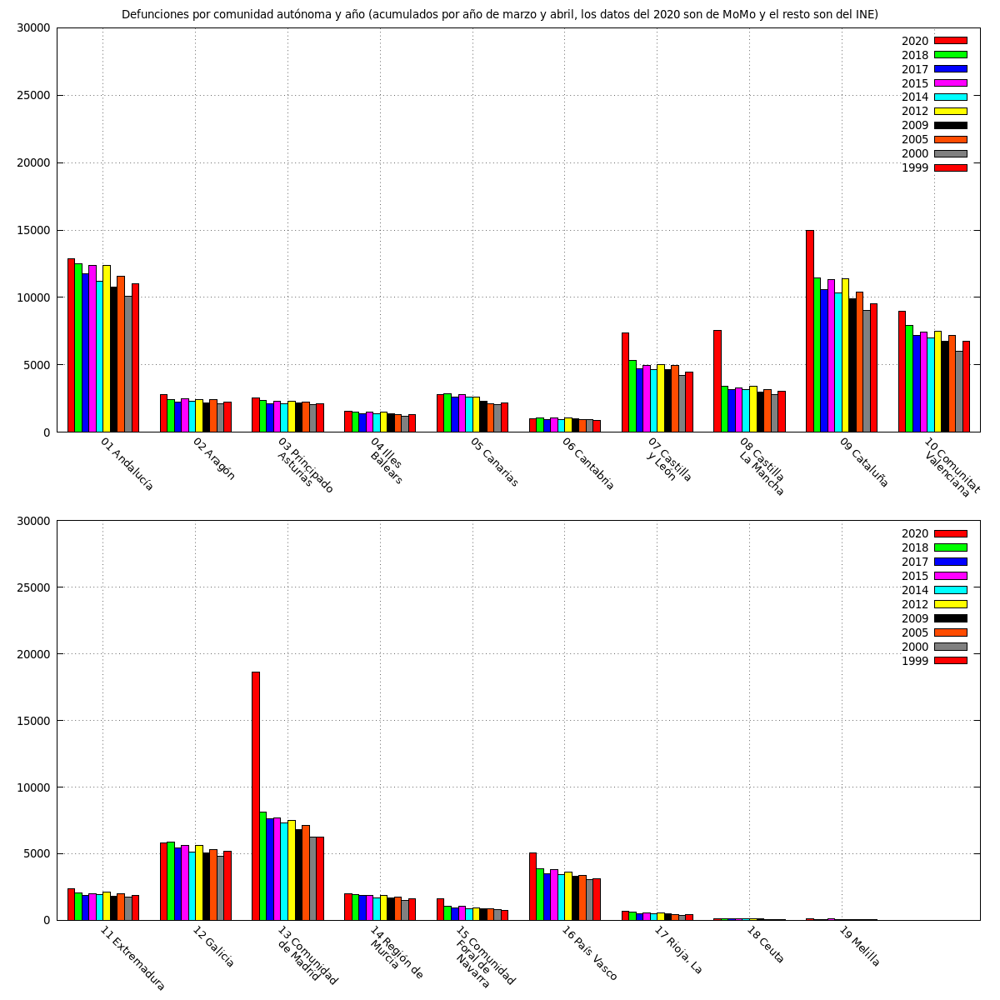

Defunciones por año y mes (sólo años donde algun mes ha superado los 40k muertos, los datos del 2020 son de MoMo y el resto son del INE)

Defunciones por año y mes de MoMo y INE entre 2018 y 2020

Defunciones por dia obtenidos de MoMo para el 2020

Defunciones por año, mes y edad (los datos del 2020 son de MoMo y el resto son del INE)

Defunciones por comunidad autónoma y año (acumulados por año de marzo y abril, los datos del 2020 son de MoMo y el resto son del INE)
